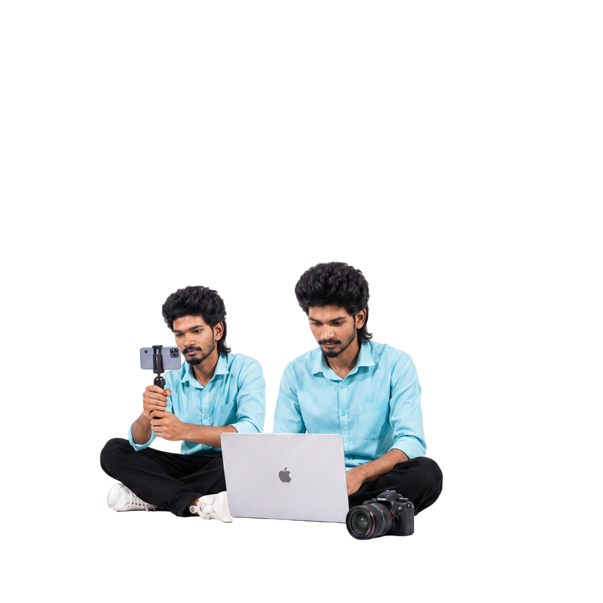

The Person Behind The Frame
Multimedia Designer · Visual Creator · Cinematic Storyteller

My Story
Hi, I'm Daniel Jebaraj (DJ Thomas) — a highly versatile media professional with comprehensive experience across pre-production, production, and post-production phases of multimedia projects. I specialize in ad films, short films, music and lyric videos, and corporate content creation.
I'm adept at the complete creative pipeline — scripting, storyboarding, shooting, editing, color grading and delivery. My aesthetic is shaped by cinematic visuals, kinetic typography and the belief that great design tells a story before a single word is spoken.
With a strong eye for storytelling and brand alignment, I thrive in both collaborative team environments and independent creative roles.
My Journey
Started video editing as a creative hobby — cutting reels, lyric videos and personal projects using mobile apps and basic desktop tools.
Moved into Adobe Premiere Pro and After Effects. Produced first commercial short film and brand promo content for local businesses.
Expanded into motion graphics, 2D animation and kinetic typography. Started creating lyric videos and music visualizers for Tamil artists.
Delivered high-quality brand films and product animations for clients across industries — FMCG, tech, fashion, and entertainment.
Mastered DaVinci Resolve for professional color grading. Took on complex post-production pipelines including multi-cam edits and VFX compositing.
Integrated AI-powered visual generation, Unreal Engine 5 environments, and cinematic poster design into creative workflow. Crossed 50+ delivered projects and 30+ satisfied clients.
Tools of the Trade
Primary NLE for professional video editing, multi-cam workflows, and broadcast delivery.
Motion graphics, visual effects, compositing, and kinetic typography animation.
Advanced color correction, color grading, Fusion VFX, and audio post-production.
Poster design, concept art, brand identity, and print/digital visual assets.
Generative AI visual creation, Unreal Engine 5 environments, and futuristic rendering.
Social-first reel editing, live production switching, and broadcast stream management.